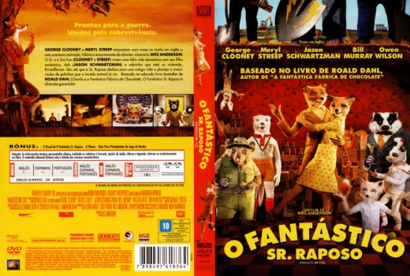
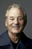

Outro Título:Fantastic Mr. Fox
País:United States, 87 minutos
Idiomas falados:Espanhol, Inglês, Português
Gênero(s):Aventura, Animação, Comédia, Família
Diretor(s):Wes Anderson
Escritor(es):Noah Baumbach, Roald Dahl, Wes Anderson
Codec:MPEG-2 (DVD)
Número: 5845


Certificado:
Sinopse:
O Sr. Raposo e a Sra. Raposa levam uma vida feliz com seu filho excêntrico Ash e Kristofferson, o sobrinho que está de visita. Isso até o Sr. Raposo voltar aos velhos hábitos e planejar o maior roubo de galinhas que o mundo animal já viu.
Elenco: 
Tipo de mídia: DVD5,
Legendas: Espanhol, Inglês, Português, Sem Legendas
Alugado: Não
Tela: Anamorphic Widescreen